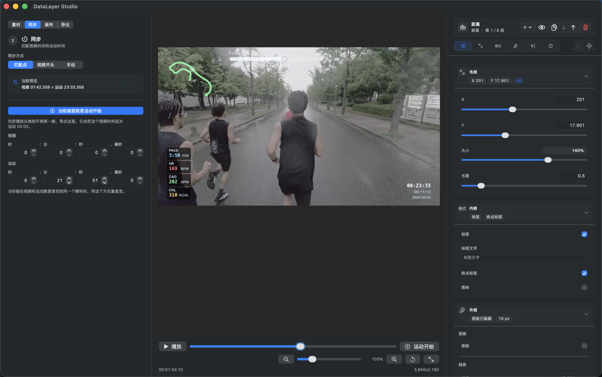
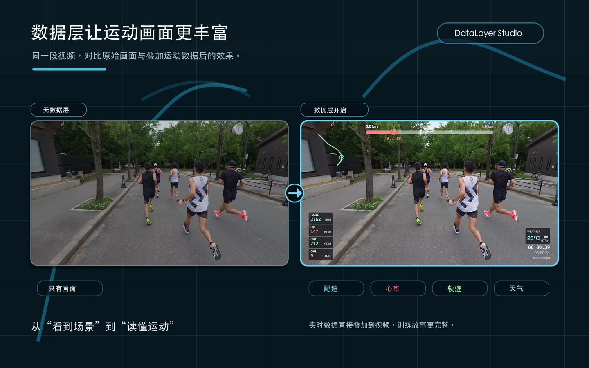
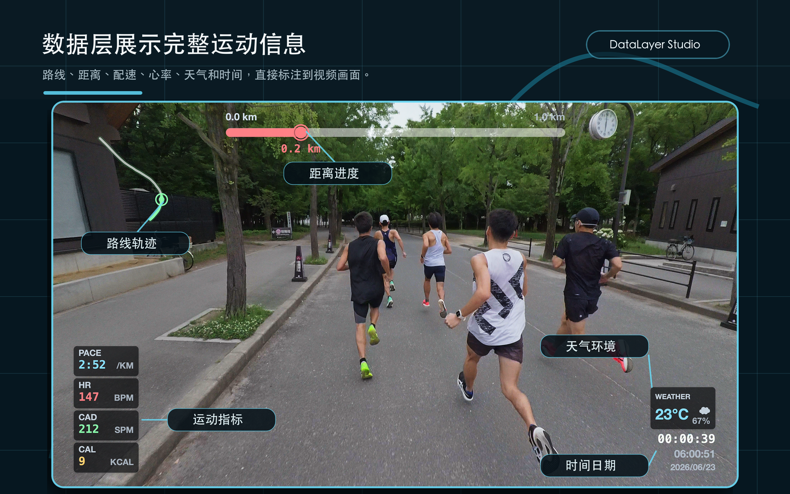

实时预览
播放源视频时同步渲染数据层，拖动和缩放后立即看到结果。
导入视频与 FIT/GPX 运动文件，校准时间，拖拽排布组件， 导出透明 Alpha 浮层或已叠加的成片。

把原本分散在运动文件、视频时间线和剪辑软件里的步骤，收束成一条可预览的制作流程。
选择源视频和 FIT/GPX 运动文件，读取分辨率、帧率、GPS 与跑步指标。
用偏移、FIT 开始或同步点对齐时间，在画布上拖拽每一层数据组件。
生成透明 Alpha 浮层放进剪辑软件，或直接导出已叠加数据层的视频成片。
配速、心率、步频、距离、轨迹、天气、时间日期都能按镜头重新组织。
播放源视频时同步渲染数据层，拖动和缩放后立即看到结果。
调整层级、位置、尺寸、透明度、字体和颜色，保存成可复用预设。
支持 GPS、距离、速度、配速、心率、步频、功率、温度等常见记录字段。
用 CLI 复用布局预设，为多个视频生成一致的数据层输出。
路线、距离进度、实时配速、心率和环境信息直接进入画面， 训练故事不再只靠字幕和后期备注解释。


默认生成带 Alpha 通道的 MOV，适合叠放在 Final Cut Pro、DaVinci Resolve、 Premiere 或类似剪辑软件的上层轨道。也可以直接导出烧录数据层的源视频。
同一套解析、同步、布局和渲染能力，也可以在命令行里调用。
swift run overlay \
--video run-video.mov \
--fit activity.fit \
--output overlay.mov \
--export-mode overlay \
--codec hevc-alphaDataLayer Studio 在 App Store 按地区标价销售，适合持续制作跑步视频、训练复盘和运动内容。
把运动文件里的时间、路线和指标，变成剪辑时间线里可控、可复用、可交付的一层画面。